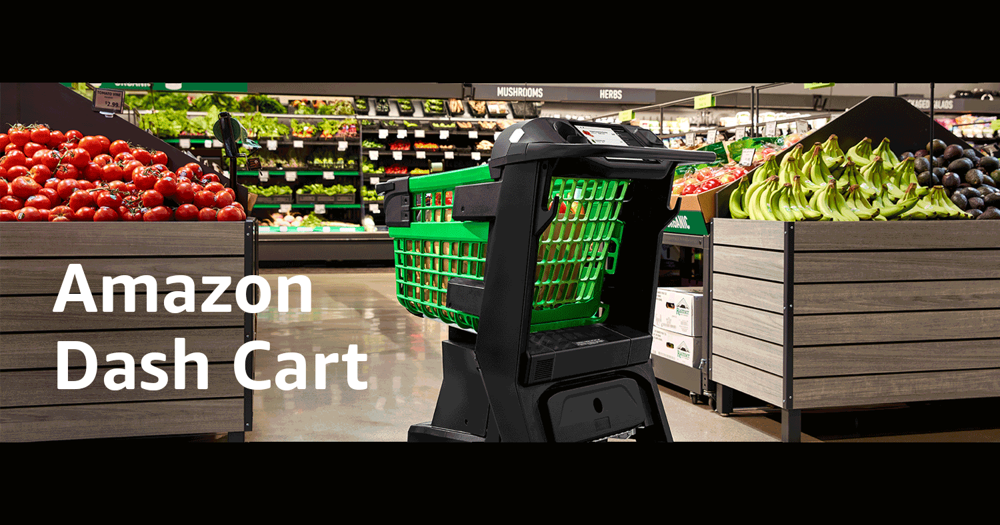
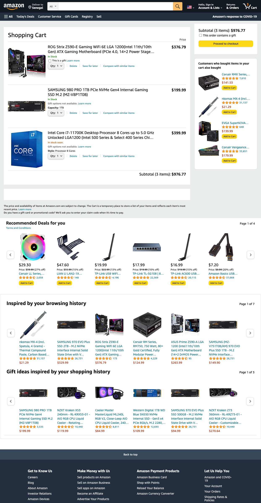

Cart crowdfunding
A great idea for eCommerce platforms like Amazon or tech entrepreneurs like you


What if you could go to the online store of your choice. This online store could be Amazon, Etsy, and why not GameStop renewed a winning e-commerce platform as promoted by the short squeezers.
What if once in this store you could like you are already doing when you make online shopping, Choose the items that you need for this project this work that matter for us and for the world. Like I have done with this screenshop below and remark that the mistake Screenshop is a great name for a startup venture that could have another e-commerce purpose. The cart I am describing is here

What if as usual, you click on proceed to checkout and land on the page for filling your credit card account information for billing this $976.77 but instead of filling your own credit card which has a balance of zero dollars you could just click on Run Crowdfunding Campaign and have your cart crowdfunding campaign page ready for people who care about your work to fund it starting from $1 to the whole cart value.
I have not seen such kind of solution applied online if you do please tell me because I need it. otherwise, try to build it because I need it and I have not still had time for building it and I am almost sure that many out there also will need it.
This concept of cart crowdfunding is very close to the concept idea behind this article below
That’s what a tech-enabled product idea generation startup does, generating tech-enabled products that matter for people and companies. These two are publicly shared and were on shelves years before now, others may go public through SPAC or sold to established companies, startups, or people lacking ideas for starting a venture.